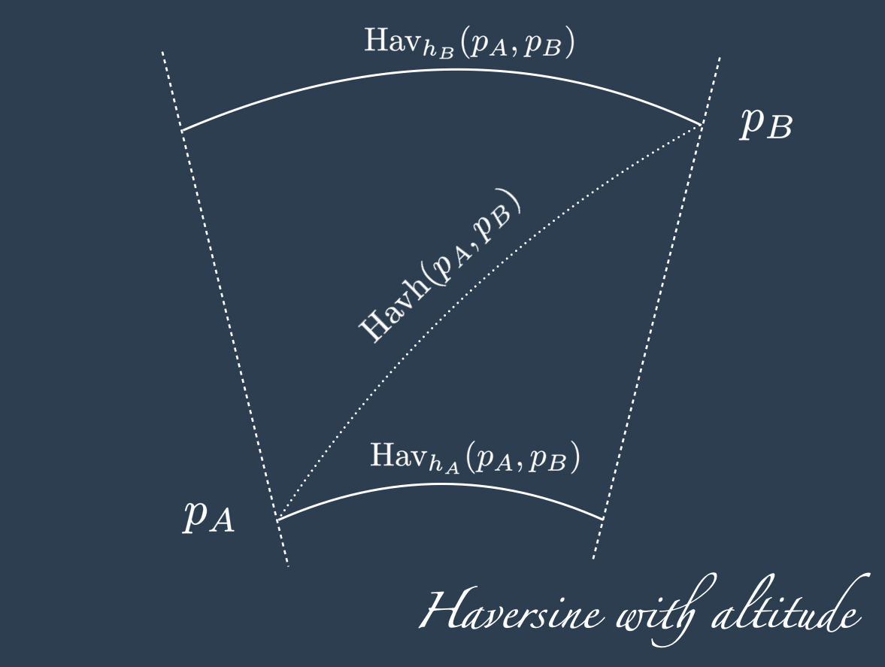

import numpy as np
from pydantic import AfterValidator, BaseModel
from typing_extensions import Annotated
def between_minus_180_and_180(lon: float) -> float:
if lon < -180 or lon > 180:
raise ValueError(f"Longitude {lon} must be between -180 and +180")
return lon
def between_minus_pi_and_pi(theta: float) -> float:
if theta < -np.pi or theta > np.pi:
raise ValueError(f"Longitude {theta} must be between -pi and +pi")
return theta
def between_minus_90_and_90(lat: float) -> float:
if lat < -90 or lat > 90:
raise ValueError(f"Latitude {lat} must be between -90 and +90")
return lat
def between_minus_half_pi_and_half_pi(phi: float) -> float:
if phi < -np.pi / 2 or phi > np.pi / 2:
raise ValueError(f"Latitude {phi} must be between -pi/1 and +pi/2")
return phi
def positive(alt: float) -> float:
if alt < 0:
raise ValueError(f"Altitude {alt} must be positive")
return alt
class PointDeg(BaseModel):
lon: Annotated[float, AfterValidator(between_minus_180_and_180)]
lat: Annotated[float, AfterValidator(between_minus_90_and_90)]
alt: Annotated[float, AfterValidator(positive)]
class Config:
frozen = True
class PointRad(BaseModel):
theta: Annotated[float, AfterValidator(between_minus_pi_and_pi)]
phi: Annotated[float, AfterValidator(between_minus_half_pi_and_half_pi)]
alt: Annotated[float, AfterValidator(positive)]
class Config:
frozen = True
class Point3D(BaseModel):
x: float
y: float
z: float
class Config:
frozen = True
def deg2rad(point: PointDeg) -> PointRad:
return PointRad(
theta=float(np.deg2rad(point.lon)),
phi=float(np.deg2rad(point.lat)),
alt=point.alt,
)
def rad2deg(point: PointRad) -> PointDeg:
return PointDeg(
lon=float(np.deg2rad(point.theta)),
lat=float(np.deg2rad(point.phi)),
alt=point.alt,
)
def immersion_from_rad(point: PointRad, earth_radius: float) -> Point3D:
return Point3D(
x=(earth_radius + point.alt) * np.cos(point.phi) * np.cos(point.theta),
y=(earth_radius + point.alt) * np.cos(point.phi) * np.sin(point.theta),
z=(earth_radius + point.alt) * np.sin(point.phi),
)
def immersion_from_deg(point: PointDeg) -> Point3D:
return immersion_from_rad(deg2rad(point))Introduction
This blog post presents a numerical method to compute the Haversine distance between points at different altitudes.
The problem is formalised in Section 2, then Section 3 offers a naive numerical method based on Pythagoras.
Finally in Section 4 a more accurate method based on differential calculus is presented.
If you are passing around to get the code, please do jump directly to to Section 5, and if you are here for some amusement, or to test your understanding, you can look at the final exercises (with some solutions) in Section 6.
Note
This blog post was inspired by this question on stack overflow, where there was not enough space to fit all my thoughts in a single answer.
Thanks to sebb for raising it, and to all the thread’s contributors.
The proposed numerical solution is a direct and simple application of the Simpson method for numerical integration (Faires, Burdeen Numerical Analysis, 7th Edition, section 4.4) combined with the Haversine distance to measure the horizontal cathet of each approximant.
Problem setting
Two points \(p_A\) and \(p_B\) on the surface of two concentric spheres can be described by the three coordinates: the usual latitude and longitude in degrees and the altitude in a chosen unit of measurement (Km in this case). When the angles are expressed in radians, we use the greek letters theta and phi, or \(\theta\) and \(\varphi\).
\[ \begin{align*} p_{A} & = \begin{cases} \theta_A \\ \varphi_A \\ h_A \\ \end{cases} \qquad p_{B} = \begin{cases} \theta_B \qquad \quad \text{longitude [rad]}\\ \varphi_B \qquad \quad \text{latitude [rad]} \\ h_B \qquad \quad \text{altitude [Km]} \\ \end{cases} \end{align*} \]
The altitude is not the radius of the spheres where each point lives, as it is relative to a zero-altitude sphere whose radius is the average earth radius \(\mathcal{R}\), that is, an ideal approximation of the sea level.
Something not used in this post, but added here for completeness and for a clearer understanding of the zero-altitude radius: the immersion of a point \(p\) with altitude \(h\) from the sphere of radius \(\mathcal{R}\) to the 3D space whose origin is at the centre of the sphere and the north pole is on the z-axis, indicated with the greek letter iota, is given by:
\[ \iota_{\mathcal{R}}: \mathbb{S}^2 \rightarrow \mathbb{R}^3 \]
\[ \iota_{\mathcal{R}}(p) = \iota_{\mathcal{R}}(\theta, \varphi, h) = \begin{cases} x = (\mathcal{R} + h) \cos\varphi \cos\theta\\ y = (\mathcal{R} + h) \cos\varphi \sin\theta\\ z = (\mathcal{R} + h) \sin\varphi\\ \end{cases} \]
In the previous blog posts about the Haversine distance and bearing we have dealt with only 2 coordinates and done without embedding them in a data class. Here for a change and to avoid swapping latitude, longitude and altitude by mistake, points on the sphere at different altitudes are encoded with python data classes.
Finally, we remind the Haversine distance formula for two points at the same altitude \(h\), or better, the Haversine distance for a earth of radius \(\mathcal{R} + h\):
\[ \begin{align*} \text{Hav}_{h}(p_A, p_B) = 2 (\mathcal{R} + h) \arcsin \left( \left[ \text{hav}(\varphi_B - \varphi_A) + (1 - \text{hav}(\varphi_B - \varphi_A) - \text{hav}(\varphi_B + \varphi_A) ) \text{hav}(\theta_B - \theta_A) \right]^{1/2} \right) \end{align*} \] where \(\text{hav}\) is the Haversine function given by: \[ \text{hav}(\lambda) := \sin^2\left(\frac{\lambda}{2}\right) = \frac{1 - \cos(\lambda)}{2}~. \]
def _hav_aux(p1: PointRad, p2: PointRad) -> float:
hav_fun = lambda x: np.sin(x / 2) ** 2
return hav_fun(p2.phi - p1.phi) + (1 - hav_fun(p2.phi - p1.phi) - hav_fun(p2.phi + p1.phi)) * hav_fun(
p2.theta - p1.theta
)
def haversine_distance(p1: PointDeg, p2: PointDeg, radius: float) -> float:
return float(2 * radius * np.arcsin(np.sqrt(_hav_aux(deg2rad(p1), deg2rad(p2)))))We conclude the section with an observation that will prove to be very convenient later on: if we have the Haversine distance between two points at the same altitude \(h_1\) (or radius \(\mathcal{R} + h_1\)) and we want to know the distance between the same point at the same altitude \(h_2\) (or radius \(\mathcal{R} + h_2\)) there is no need to re-compute the haversine.
We can simply divide by the orignal radius \(\mathcal{R} + h_1\), and then multiply for the intended radius \(\mathcal{R} + h_2\).
In formula: \[ \begin{align} \text{Hav}_{h_2} = \frac{\mathcal{R} + h_2}{\mathcal{R} + h_1} \text{Hav}_{h_1}~. \end{align} \tag{1}\]
R_Km = 6371
# two input points
p_A = PointDeg(lon=0.0, lat=0.0, alt=0)
p_B = PointDeg(lon=5.0, lat=5.0, alt=200)
# generalize to any altitude
R_min = np.min([p_A.alt, p_B.alt]) + R_Km
R_max = np.max([p_A.alt, p_B.alt]) + R_Km
print(f"radius of the lowest point: {R_min} (Km)")
print(f"radius of the highest point: {R_max} (Km)")
assert np.abs(haversine_distance(p_A, p_B, R_max) - (R_max / R_min) * haversine_distance(p_A, p_B, R_min)) < 10e-12
assert np.abs(haversine_distance(p_A, p_B, R_min) - (R_min / R_max) * haversine_distance(p_A, p_B, R_max)) < 10e-12radius of the lowest point: 6371.0 (Km)
radius of the highest point: 6571.0 (Km)First approximation with Pythagoras
The most direct way to compute the Haversine distance between two points at different altitude is to apply Pythagora1 to the two cathets given by the haversine distance at the lowest altitude of the two points (say \(h_A\)) and to the difference in altitudes:
\[ \begin{align*} \text{Havh} (p_A, p_B) := \sqrt{\text{Hav}_{h_A} (p_A, p_B)^2 + (h_B - h_A)^2 } \end{align*} \]
Now, for the case of \(h_A < h_B\) we can geometrically expect \(\sqrt{\text{Hav}_{h_A} (p_A, p_B)^2 + (h_B - h_A)^2 }\) to be smaller than \(\sqrt{\text{Hav}_{h_B} (p_A, p_B)^2 + (h_B - h_A)^2 }\). We can also expect the first hypotenuse to be a lower bound for the correct solution and the second hypotenuse to be an upper bound.

So, a more accurate, although still naive answer can be their average:
\[ \begin{align*} \text{Havh} (p_A, p_B) := 0.5 \sqrt{\text{Hav}_{h_A} (p_A, p_B)^2 + (h_B - h_A)^2 } + 0.5 \sqrt{\text{Hav}_{h_B} (p_A, p_B)^2 + (h_B - h_A)^2 } \end{align*} \]
def haversine_distance_h_naive(p1: PointDeg, p2: PointDeg, earth_radius: float) -> float:
r_min = np.min([p1.alt, p2.alt]) + earth_radius
r_max = np.max([p1.alt, p2.alt]) + earth_radius
return (
np.sqrt(haversine_distance(p1, p2, r_min) ** 2 + (p1.alt - p2.alt) ** 2)
+ np.sqrt(haversine_distance(p_A, p_B, r_max) ** 2 + (p1.alt - p2.alt) ** 2)
) / 2
dist_pyt = haversine_distance_h_naive(p_A, p_B, R_Km)
print(f"Distance with naive Pythagoras {round(dist_pyt, 4)} Km")Distance with naive Pythagoras 822.7841 KmAnalytical solution
The naive solution is not a great approximation: when increasing the altitude, the distance between points increases too, and that progressive increase is not taken into account when using the distance at the lowest altitude for the horizontal cathet.
Equivalently, when we use the highest altitude for horizontal cathet, the progressive decrease is not taken into account.
Skipping the integral calculus details2, we go directly to the numerical approximation: this is based on combining the Simpson method where the Haversine distance is used to computed the length of the horizontal cathet.
Considering \(R_{\text{min}} = \mathcal{R} + \text{min}(h_A, h_B)\) and \(R_{\text{max}} = \mathcal{R} + \text{max}(h_A, h_B)\) the radius of the smallest and largest concentric spheres of our model respectively, we define \(D := \text{Hav}_{\text{min}(h_A, h_B)} (p_A, p_B)\) the distance between the two points at the lowest altitude, and \(H := |h_A - h_B|\) the absolute difference of the altitudes. Chosen a positive integer number \(N\), the horizontal cathet \(D\) splits in \(N\) segments of length \(d := D/N\) at the base and the vertical cathet splits into \(N\) segments of length \(h := H/N\).
If the earth was flat the sought distance between \(p_A\) and \(p_B\) would be trivially the sum of the hypotenuses \(\gamma_i = \sqrt{d^2 + h^2}\) for \(i=0, \dots , N\). Due to the curvature, the length of the horizontal cathet has to be adjusted for the altitude increase. We can do that simply using \(d\) and Equation 1 , with no need to re-compute the haversine distance at each step:
\[ \gamma_i = \sqrt{ \left( d \frac{ R_{\text{min}} + ih }{ R_{\text{min}}} \right)^2 + h^2} \] And their sum: \[ \text{Havh}(p_A, p_B) = \gamma = \sum_{i=0}^{N-1}\sqrt{ \left( d \frac{ R_{\text{min}} + ih }{ R_{\text{min}}} \right)^2 + h^2} \]

H = np.abs(p_A.alt - p_B.alt)
D = haversine_distance(p_A, p_B, R_min)
D_max = haversine_distance(p_A, p_B, R_max)
print(f"distance in altitude: {round(H,4)} Km)")
print(f"haversine dist at lowest altitude: {round(D,4)} Km")
print(f"haversine dist at highest altitude: {round(D_max,4)} Km")
N = 300
d = D / N
h = H / N
print()
print(f"step distance in altitude: {round(h,4)} (Km)")
print(f"step distance haversine: {round(d,4)} (Km)")
dist = float(np.sum([np.sqrt((d * ((R_min + i * h) / R_min)) ** 2 + h**2) for i in range(0, N)]))
print()
print(f"solution with Pythagoras: {round(dist_pyt,4)} (Km)")
print(f"solution with the numerical approx: {round(dist,4)} (Km)")distance in altitude: 200.0 Km)
haversine dist at lowest altitude: 785.7672 Km
haversine dist at highest altitude: 810.4342 Km
step distance in altitude: 0.6667 (Km)
step distance haversine: 2.6192 (Km)
solution with Pythagoras: 822.7841 (Km)
solution with the numerical approx: 822.7406 (Km)Code
Bringing it together in a single function:
def haversine_distance_with_altitude(
p1: PointDeg,
p2: PointDeg,
earth_radius: float = 6371.0,
iterations: int = 300,
) -> float:
R_min = np.min([p1.alt, p2.alt]) + earth_radius
d = haversine_distance(p1, p2, R_min) / iterations
h = np.abs(p1.alt - p2.alt) / iterations
return float(np.sum([np.sqrt((d * ((R_min + i * h) / R_min)) ** 2 + h**2) for i in range(0, iterations)]))
dist = haversine_distance_with_altitude(p_A, p_B, iterations=300)
print(f"Haversine distance with altitude: {round(dist,4)} Km")Haversine distance with altitude: 822.7406 KmFor the reader who prefers to avoid classes, at the cost of having more arguments and less validations:
import numpy as np
def hav_aux(theta_1: float, phi_1: float, theta_2: float, phi_2: float) -> float:
hav_fun = lambda x: np.sin(x / 2) ** 2
return hav_fun(phi_2 - phi_1) + (1 - hav_fun(phi_2 - phi_1) - hav_fun(phi_2 + phi_1)) * hav_fun(theta_2 - theta_1)
def haversine_distance(p1_lon: float, p1_lat: float, p2_lon: float, p2_lat: float, R_Km: float) -> float:
theta_1, phi_1, theta_2, phi_2 = map(np.radians, [p1_lon, p1_lat, p2_lon, p2_lat])
return float(2 * R_Km * np.arcsin(np.sqrt(hav_aux(theta_1, phi_1, theta_2, phi_2))))
def haversine_distance_with_altitude(
lon_1: float,
lat_1: float,
alt_1: float,
lon_2: float,
lat_2: float,
alt_2: float,
earth_radius: float = 6371.0,
iterations: int = 300,
) -> float:
R_min = np.min([alt_1, alt_2]) + earth_radius
d = haversine_distance(lon_1, lat_1, lon_2, lat_2, R_min) / iterations
h = np.abs(alt_1 - alt_2) / iterations
return float(np.sum([np.sqrt((d * ((R_min + i * h) / R_min)) ** 2 + h**2) for i in range(0, iterations)]))Validation
# points at the same altitude
p_A = PointDeg(lon=0.0, lat=0.0, alt=0)
p_B = PointDeg(lon=5.0, lat=5.0, alt=0)
assert haversine_distance_with_altitude(p_A, p_B, R_Km, 300) == haversine_distance(p_A, p_B, R_Km)
# points in same location, at different altitude
alt_diff = 200
p_A = PointDeg(lon=0.0, lat=5.0, alt=0)
p_B = PointDeg(lon=0.0, lat=5.0, alt=alt_diff)
assert haversine_distance_with_altitude(p_A, p_B, R_Km, 300) == alt_diffHands-on
- Can you improve the numerical method with the average of the hypotenuses for each single sub-segment, as done in the naive solution?
- Can you weight the hypotenuses’ average to improve the solution further? how would you compute the weights?
- Can you turn the
haversine_distance_with_altitudefunction into class methods? - Is the haversine distance with altitude a geodesic in the 3D space? What is the shortest path between two points at different altitudes (with and without digging tunnels)? For this answer the function \(\iota_{\mathcal{R}}\) introduced in the first section may be of some help.
- The Simpson method was mentioned, though not all the terms of the usual Simpson formula were used. Can you find an analogous Simpson with the right set of weights? Problem 2 may give some hints in this direction.
# solution to problem 1
def haversine_distance_with_altitude_better(
p1: PointDeg,
p2: PointDeg,
earth_radius: float = 6371.0,
iterations: int = 300,
) -> float:
R_min = np.min([p1.alt, p2.alt]) + earth_radius
d = haversine_distance(p1, p2, R_min) / iterations
h = np.abs(p1.alt - p2.alt) / iterations
return float(
np.sum(
[
(
np.sqrt((d * ((R_min + i * h) / R_min)) ** 2 + h**2)
+ np.sqrt((d * ((R_min + (i + 1) * h) / R_min)) ** 2 + h**2)
)
/ 2
for i in range(0, iterations)
]
)
)
# solution to problem 2
def haversine_distance_with_altitude_even_better(
p1: PointDeg,
p2: PointDeg,
earth_radius: float = 6371.0,
iterations: int = 300,
) -> float:
R_min = np.min([p1.alt, p2.alt]) + earth_radius
R_max = np.max([p_A.alt, p_B.alt]) + earth_radius
dp_min = float(np.sqrt(haversine_distance(p_A, p_B, R_min) ** 2 + (p_A.alt - p_B.alt) ** 2))
dp_max = float(np.sqrt(haversine_distance(p_A, p_B, R_max) ** 2 + (p_A.alt - p_B.alt) ** 2))
dh = haversine_distance_with_altitude_better(p_A, p_B)
# find w such that dh ~= (1-w)*dp_min + w*dp_max
w = (dh - dp_min) / (dp_max - dp_min)
d = haversine_distance(p1, p2, R_min) / iterations
h = np.abs(p1.alt - p2.alt) / iterations
return float(
np.sum(
[
(
(1 - w) * np.sqrt((d * ((R_min + i * h) / R_min)) ** 2 + h**2)
+ w * np.sqrt((d * ((R_min + (i + 1) * h) / R_min)) ** 2 + h**2)
)
for i in range(0, iterations)
]
)
)References
- Stack overflow question
- Burden, Richard L., and J. Douglas Faires. “Numerical analysis”, brooks, 7th edition, 2000.
- Richard Hamming. “Numerical Methods for Scientists and Engineers.” Dover, 2nd edition, 2021.
Footnotes
For the naming, the two edges \(\alpha\) and \(\beta\) adjacent to the \(90^{o}\) angle are called here cathets, and the opposite edge \(\gamma\) is called here hypotenuse, so \(\gamma = \sqrt{\alpha^2 + \beta^2}\).↩︎
To continue in this direction we would consider the infinitesimal lengths \(\gamma_{x}^{x+dx} = \sqrt{\text{Hav}_{h_x} (p_x, p_{x + dx})^2 + (h_{x} - h_{x+dx})^2 }\), and their infinite sum \(\gamma = \int_{0}^{\text{Hav}_{h_A}(p_A, p_B) } \sqrt{ \left( \frac{\mathcal{R} + h(x)}{\mathcal{R} + h_A} \text{Hav}_{h_x}(p_A, p_x)\right)^2 + \left( h(x) - h_{A}\right)^2 } dx\).↩︎